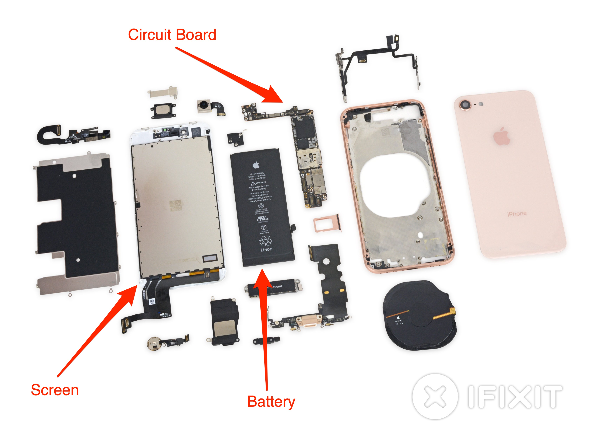
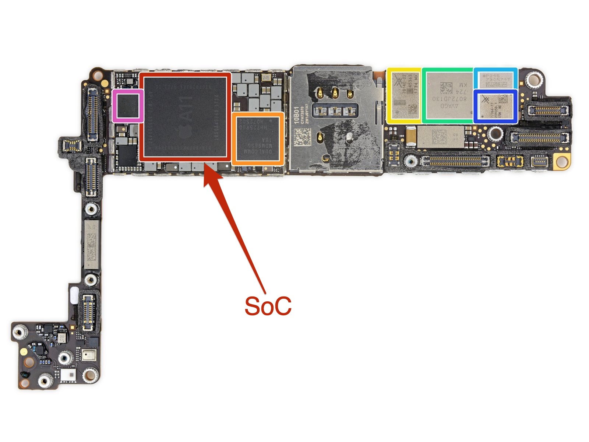
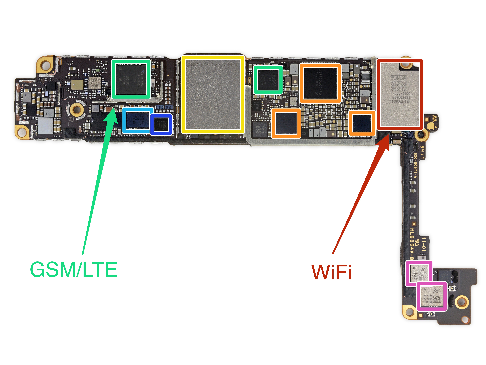
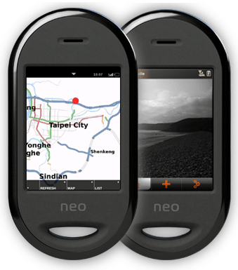
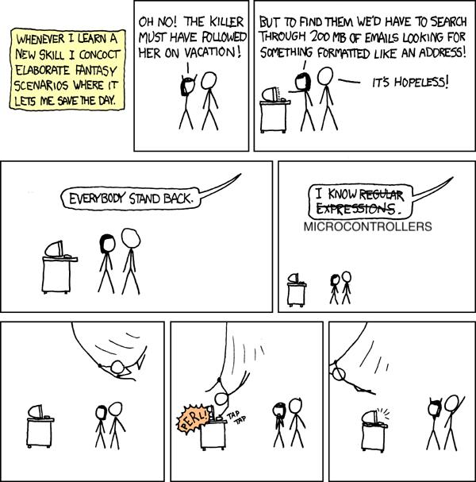
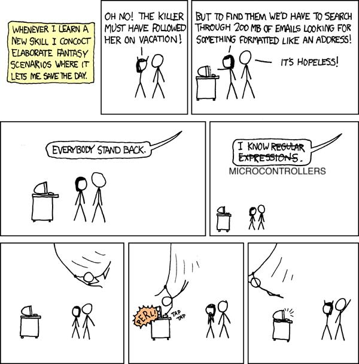

Acoustic Wakeup
Normal Mode - 4W
Low Power Mode - 0.5W
A "wakeup signal"

iPhone 8
iPhone 8
 Openmoko Neo Freerunner
→ an interrupt pin has to be toggled by something else

xkcd 208Normal Mode - 4W
Low Power Mode - 0.5W
A "wakeup signal"
→ an interrupt pin has to be toggled by something else

xkcd 208